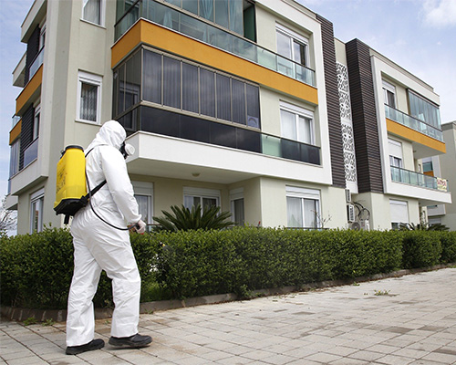

home>
서비스>
가정집
가정집
home가족의 행복을 지켜주는, 리빙 파트너
-
- 1. 사전조사 및 진단
- - 정확한 문제해충 종류 및 성장주기, 성별파악
- - 서식처 파악
- - 침입 및 이동경로 파악
-

- 2. 처방
- - 세스코 위생해충기술, 연구소에서 자체개발,
생산된 약제시스템을 적용한 1:1 맞춤방제솔루션 처방
-

- 3. 투약 및 조치
- - 처방된 약제의 투약 및 방제솔루션 적용
- - 해충 유입 경로에 대한 시설 보완 컨설팅
-
- 4. 정기 모니터링 서비스
- - 지속적인 해충퇴치 현황파악으로 해충 재발방지
- - 문제 발생 시, 신속하고 완벽한 대처 가능